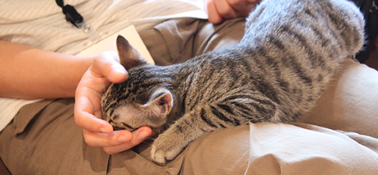

初心者向け 猫との接し方
-
まず、指を差し出す。
- 指を差し出すと、猫は匂いを嗅ぎに鼻を近づけます。
- 逃げられる事もありますが、めげずに他の子に試してみてください。
- いきなり捕まえたりすると、猫は警戒します。ご注意を。
-
匂いを嗅いだり、指に頬を擦り付けてくれると、第一段階終了。
- これで【危険生物ではない】と認定されました。
- 愛想の良い子だと、指を舐めてくれる事も。
-
ここが分かれ道。暫く猫の好きにさせてあげて下さい。
-

猫が気を許してくれたと感じたら、
自分からも撫でてみましょう。
- 猫が好きな場所は、頬・アゴの下・額・耳の裏。
- 初心者の方は、頬やアゴの下が無難です。
- 最初のうちは、軽く、優しく撫でるのがコツです。
猫と遊ぶテクニック集
-
まず、座布団の下や自分の脚の下などから、ちょこっとおもちゃを出して気を引く方法。
- ネズミなど小動物が隠れてるような感じでコソコソ動かすのがコツ。
- ハンターとしての本能が疼き、飛びかかってきます。
-
次に、音を立てる方法。
- バサッバサッと音がすると、齧り付いてきます。
- 難点は少し五月蠅い事。
- 他のお客さんの迷惑になってるようでしたら、控えて下さい。
-
地味に効果的なのが、紐を垂らす方法。
- 座った状態で自分の周りをくるくる回すと、猫大回転。
- 立った状態で回すと、脚に齧り付いてきます。
- 但し、紐を食べられないように。飲み込むと消化に良くありません。
-
猫と遊ぶには、とにかく好奇心を刺激すること。
- 上手な方のおもちゃ捌きを見てると、決して派手に動かしません。
- ねずみが隠れるように、虫がちょろちょろ動くように、
どちらかといえば小さく動かしてます。
- 「あれはなんだ？」と思わせたら勝ち。
-
猫が興味を示してるかどうかは、瞳を見れば判ります。
- 新しいおもちゃを見つけた子供のように、瞳が丸く輝いたら成功。
- ふつーの顔してたら失敗です。
- 仕切り直しましょう。
-
寝ている時は、よほどの事がない限り寝たままです。
- 遊ぶのは諦めましょう。
- むしろ、触れるチャンスです。
- 寝ている猫は逃げません。
- 但し、起こさないように、そっと。